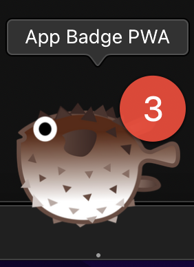

How to create an app badge
-
Watch the favicon. You should see a counter that updates each second
integrated into the favicon.
-
Install the app by clicking the button below. After the installation,
the button is disabled.
-
Watch the app icon in your operating system's task bar. You should see a
counter that updates each second as an app badge.
